Personajes

Jinx
Una rebelde impredecible con un pasado tormentoso.
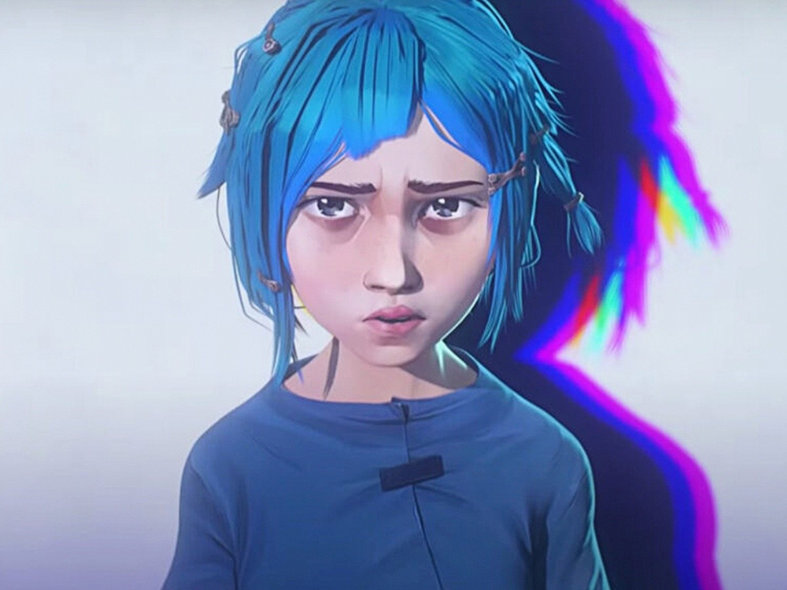
Powder
Una niña ingeniosa y sensible que busca la aceptación de Vi.
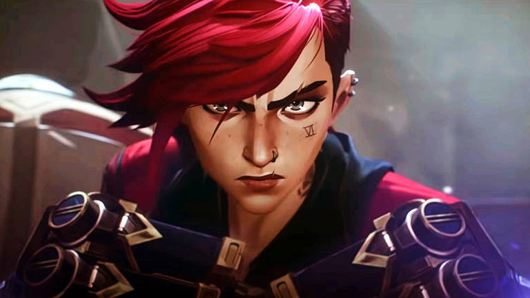
Vi
Una defensora feroz de Piltover con un fuerte sentido de justicia.
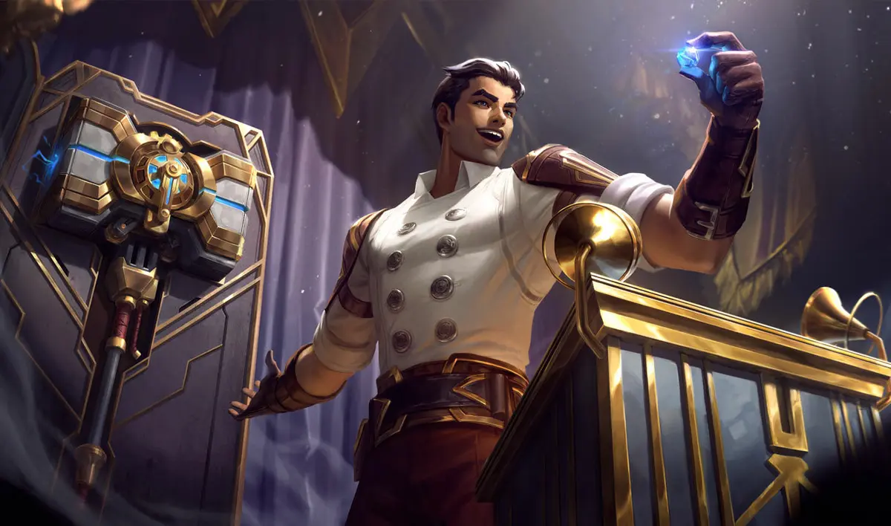
Jayce
Un inventor brillante decidido a proteger su ciudad.
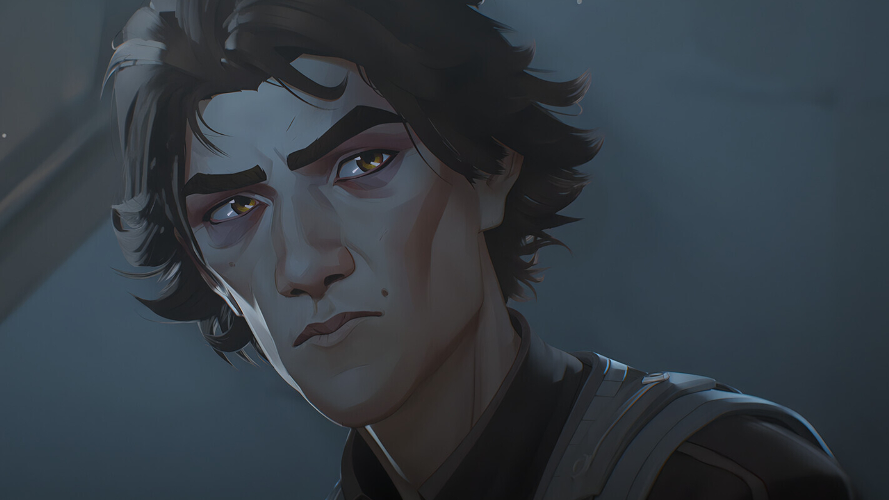
Viktor
Un visionario de Zaun obsesionado con superar las limitaciones humanas.
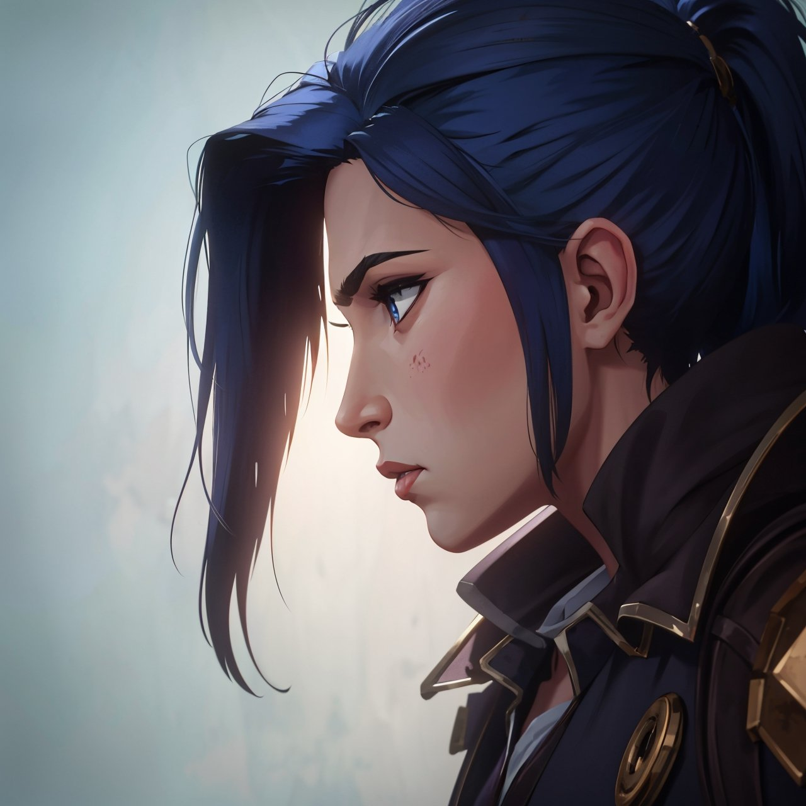
Caitlyn
Una oficial de Piltover comprometida con la justicia.
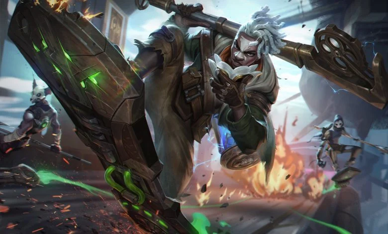
Ekko
Un genio joven y líder rebelde de Zaun
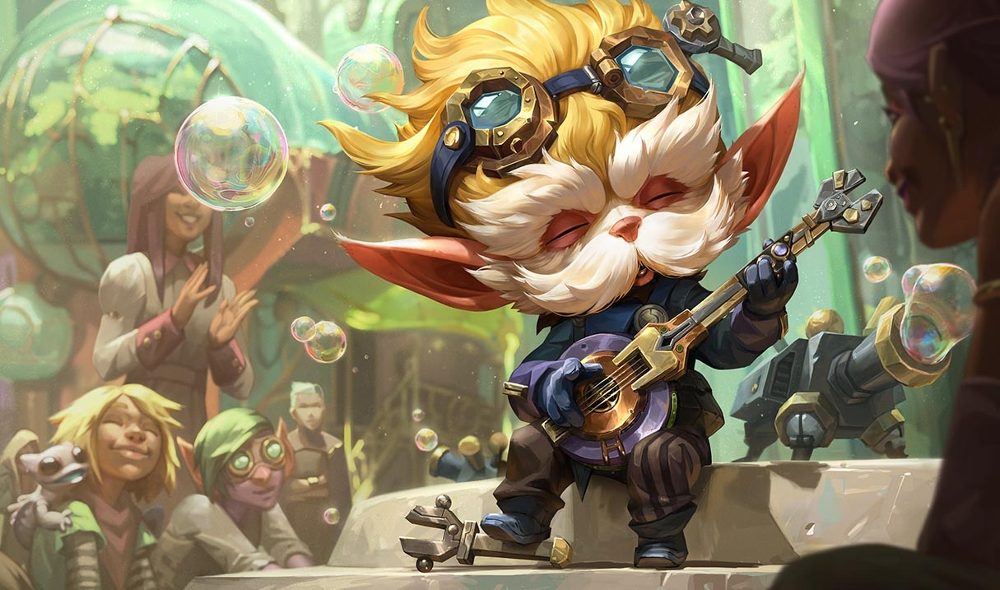
Heimerdinger
Un sabio yordle que guía a Piltover
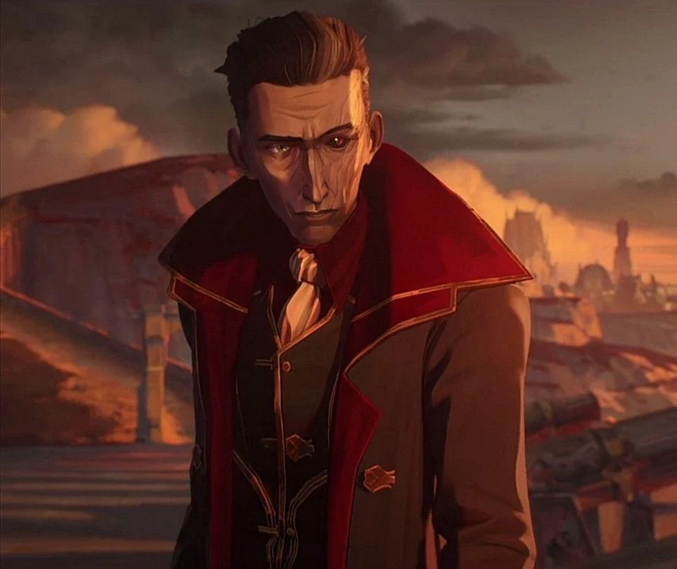
Silco
Un líder ambicioso de Zaun que busca independencia a cualquier costo
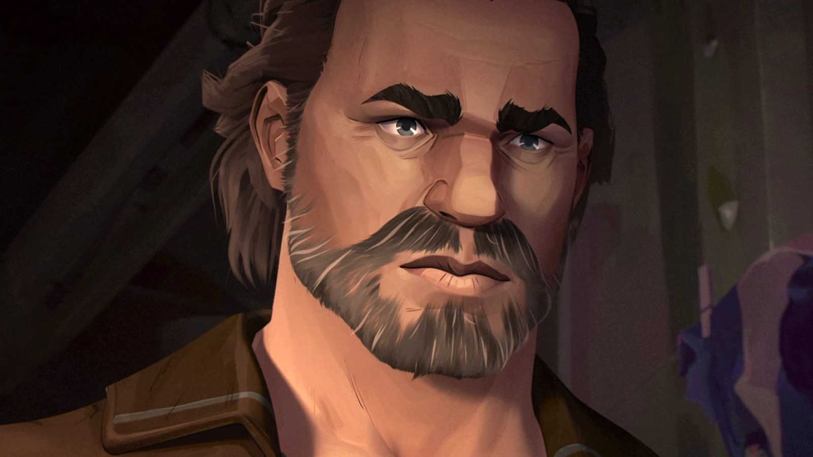
Vander
Una figura paterna para Vi y Powder. Busca mantener la paz entre Zaun y Piltover,
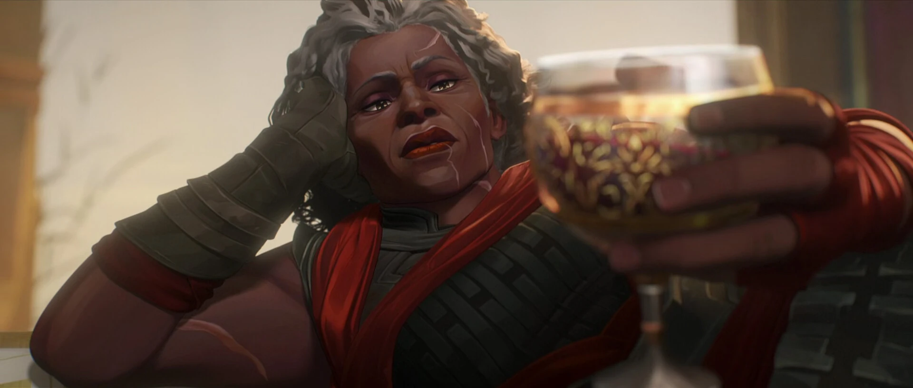
Ambessa
Una estratega de Noxus y madre de Mel
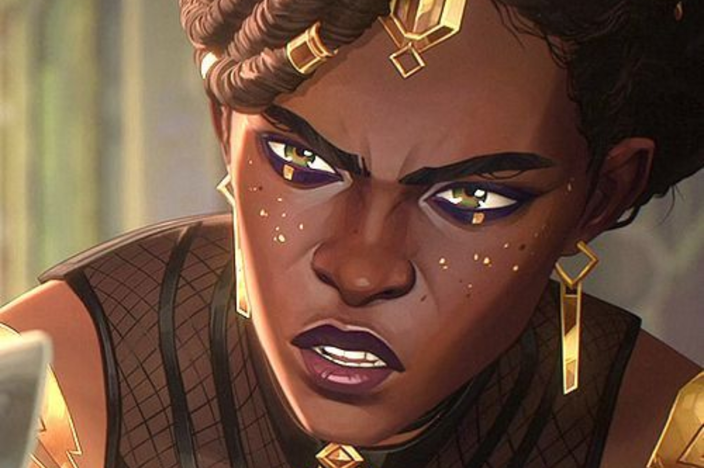
Mel
Una visionaria política de Piltover con un pasado complicado